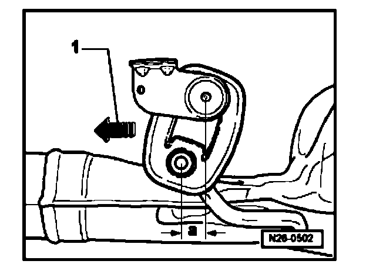

Aligning Exhaust System

Aligning exhaust system
Conditions
^ Exhaust system cold
Procedure
- Press exhaust system in direction of travel - 1 - and tighten double clamp so far that dimension - a - is attained at the supports.
Center muffler Dimension - a - = 10 mm
Rear muffler Dimension - a - = 15 mm